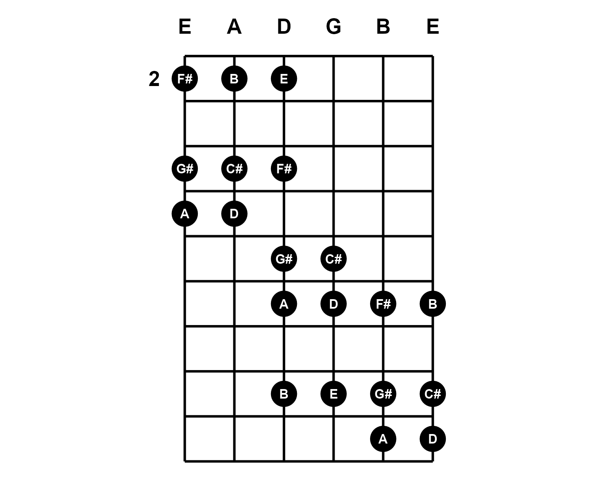
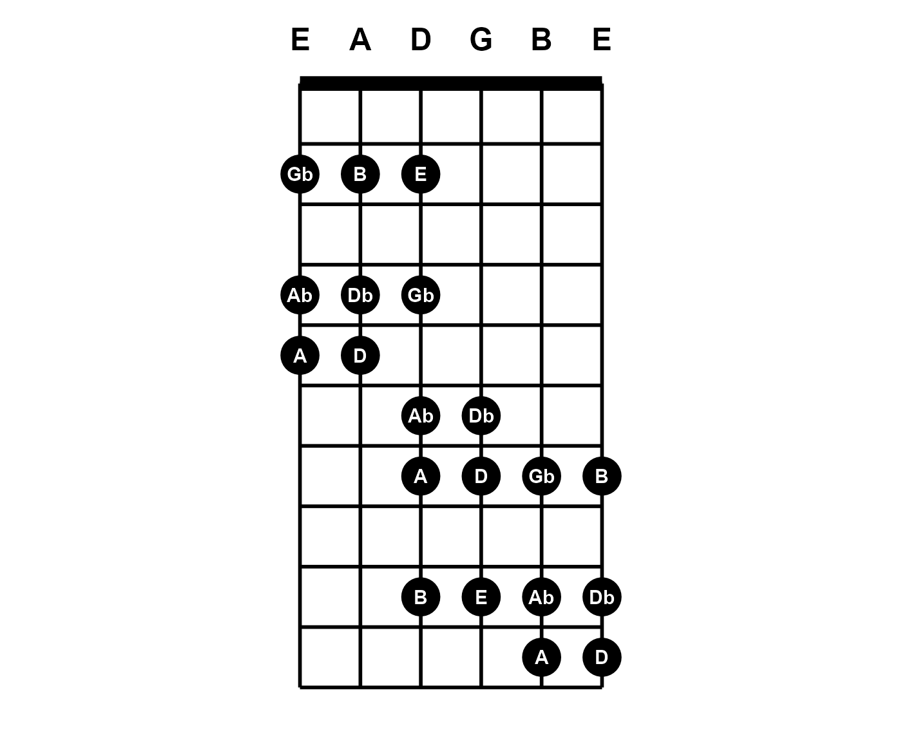
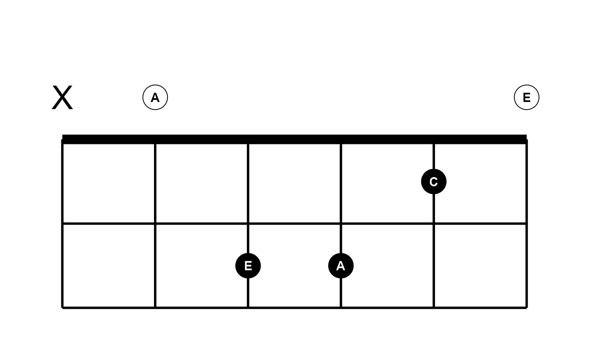
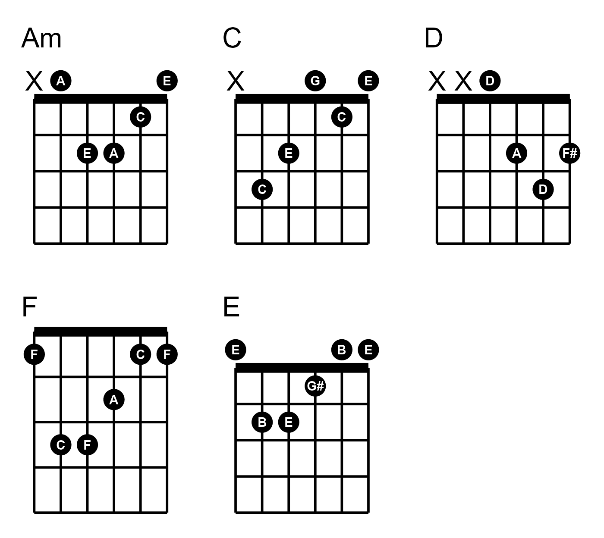

Overview
While music visualization in tabr focuses on leveraging
LilyPond to make tablature, some diagrams can also be drawn directly in
R using ggplot without any need to involve LilyPond. The
plot_fretboard() function makes standalone fretboard
diagrams in R, independent of the LilyPond sheet music pipeline.
plot_fretboard() is a highly specialized function that
takes vector inputs for string numbers and fret numbers and maps the
combination element-wise to produce a fretboard diagram. Note that
plot_fretboard() is a developmental function and the
interface and arguments it provides may change.
The fretted notes are marked in the diagram using customary large circles.
plot_fretboard(string = 6:1, fret = c(0, 2, 2, 0, 0, 0))Labels and tuning
The fretted notes can be labeled. labels can be an
arbitrary vector corresponding to the string and fret numbers. For
example, you can label each circle with the fingerings used to play
chords or scales.
plot_fretboard(6:1, c(0, 2, 2, 0, 0, 0), c("G", "U", "I", "T", "A", "R"))
If you set labels = "notes", this is a special setting
that will label all points with their note names. This can be done
automatically because providing string and fret numbers in conjunction
with the tuning argument gives full information about the
notes along the guitar neck. plot_fretboard() transposes
these internally. This means it will work automatically no matter what
arbitrary tuning you set. Here is an example that also
displays the tuning.
string <- c(6, 6, 6, 5, 5, 5, 4, 4, 4, 4, 4, 3, 3, 3, 2, 2, 2, 1, 1, 1)
fret <- c(2, 4, 5, 2, 4, 5, 2, 4, 6, 7, 9, 6, 7, 9, 7, 9, 10, 7, 9, 10)
plot_fretboard(string, fret, "notes", show_tuning = TRUE)
When labels = "notes", accidentals are displayed as
flats by default. Set accidentals = "sharp" to change. You
can also align any fret numbers with the corresponding fretted strings
with fret_offset = TRUE.
plot_fretboard(string, fret, "notes", show_tuning = TRUE, fret_offset = TRUE, accidentals = "sharp")
Also notice above that when zero position is not displayed, the
lowest fret number is automatically printed. The default behavior is to
show no fret numbers or only the lowest when necessary for context. You
can override this behavior by providing a vector of desired fret numbers
to fret_labels. For example, you may want to print fret
numbers 3, 5, 7, 9, and 12 for guitar.
plot_fretboard(string, fret, "notes", show_tuning = TRUE, fret_labels = c(3, 5, 7, 9, 12))Fret labels are displayed subject to the limits imposed by the data
(fret) or by the override (fret_range,
below).
Limits
X and Y limits are expressed in terms of the number of instrument
strings and the span of frets. You can override the fret range that is
derived from fret:
plot_fretboard(string, fret, "notes", fret_range = c(0, 10), show_tuning = TRUE)
The number of strings an instrument has is derived from
tuning and this generalizes the fretboard diagram
possibilities further. The tuning now specifies a seven-string guitar.
One note has been added on string seven:
tuning <- "b1 e2 a2 d3 g3 b3 e4"
plot_fretboard(c(7, string), c(1, fret), "notes", fret_range = c(0, 10),
tuning = tuning, show_tuning = TRUE)
Color and faceting
The points (circles) can have border and fill color. The labels can
also be colored separately. These arguments can be vectorized. Notice
the open Am chord does not really have an open sixth string; it is
muted. The zero is still given in order to specify where to notate, but
the mute argument is given with a logical vector that
indicates this entry is muted.
am_frets <- c(c(0, 0, 2, 2, 1, 0), c(5, 7, 7, 5, 5, 5))
am_strings <- c(6:1, 6:1)
mute <- c(TRUE, rep(FALSE, 11))
# colors
idx <- c(2, 2, 1, 1, 1, 2, rep(1, 6))
lab_col <- c("white", "black")[idx]
pt_fill <- c("firebrick1", "white")[idx]
plot_fretboard(am_strings, am_frets, "notes", mute,
label_color = lab_col, point_fill = pt_fill)
group can also be used for faceting. However, faceting
is still a problematic feature. It may work well enough in cases where
the different diagrams span similar frets. The presence of muted notes
can also cause issues when faceting. plot_fretboard() works
best for single-panel plots. Since the function returns a ggplot object,
you can always make them separate plots and arrange in a grid layout
rather than rely on within-plot faceting.
Note that plot_fretboard() accepts character inputs like
those used throughout tabr.
f <- "0 2 2 1 0 0 0 2 2 0 0 0"
s <- c(6:1, 6:1)
grp <- rep(c("Open E", "Open Em"), each = 6)
# colors
idx <- c(2, 1, 1, 1, 2, 2, 2, 1, 1, 2, 2, 2)
lab_col <- c("white", "black")[idx]
pt_fill <- c("firebrick1", "white")[idx]
plot_fretboard(s, f, "notes", group = grp, fret_range = c(0, 4),
label_color = lab_col, point_fill = pt_fill)Orientation
The direction and handedness can also be changed. Diagrams can be vertical or horizontal as well as left- or right-handed.
Here, titles are added to the ggplot objects with
ggtitle. Of course you can add onto ggplot objects returned
by plot_fretboard(), but you are limited in what you can
add on and must be careful to avoid overriding properties of layers
plot_fretboard() has already specified.
library(ggplot2)
plot_fretboard(string, fret, "notes", label_color = "white", point_fill = "dodgerblue",
fret_range = c(0, 10), show_tuning = TRUE, horizontal = TRUE) +
ggtitle("Horizontal")
plot_fretboard(string, fret, "notes", label_color = "white", point_fill = "dodgerblue",
fret_range = c(0, 10), show_tuning = TRUE, horizontal = TRUE, left_handed = TRUE) +
ggtitle("Horizontal and left-handed")Chord diagrams
The previous examples show a mix of using
plot_fretboard() to make general fretboard diagrams that
show scales, arpeggios and other patterns, as well as to produce chord
diagrams of specific chords. It is easier to use
plot_chord() for the latter. It is a wrapper around
plot_fretboard() that takes a string representing a single
chord in the simple fret format shown here.
idx <- c(1, 1, 2, 2, 2, 1)
fill <- c("white", "black")[idx]
lab_col <- c("black", "white")[idx]
plot_chord("xo221o", "notes", label_color = lab_col, point_fill = fill)
Leading x is inferred if there are fewer fret values in
the string than there are instrument strings, as inferred from the
tuning argument. plot_chord() takes all the
same arguments as plot_fretboard() except that it takes
chord instead of string and fret
and it does not use mute because muted notes are indicated
with an x inside chord.
plot_chord("0231")Frets are assumed to be single-digit when provided as above. When any two-digit fret value occurs, you must provide the fret values as space- or semicolon-delimited. The latter is like LilyPond format, but a trailing semicolon is ignored if present.
plot_chord("10 12 13 11", fret_range = c(9, 14)) # same as "10;12;13;11"In an effort to leave some flexibility to the user, and while these
plotting functions remain under development, plotting multiple chords as
a chord chart is intentionally handled separately on a case by case
basis. Here is an example using a little extra ggplot2,
purrr and gridExtra. It also shows how you can
tweak some layout settings to size and arrange elements nicely for your
Rmd file.
library(ggplot2)
library(purrr)
library(gridExtra)
chords <- c("02210", "32010", "0232", "133211", "022100")
id <- c("Am", "C", "D", "F", "E")
g <- map2(chords, id, ~{
plot_chord(.x, "notes", point_size = 8, fret_range = c(0, 4), accidentals = "sharp", asp = 1.25) +
ggtitle(.y)
})
grid.arrange(grobs = g, nrow = 2)
You can use marrangeGrob() instead of
grid.arrange() if you want to split a larger set of chord
diagrams onto multiple pages.